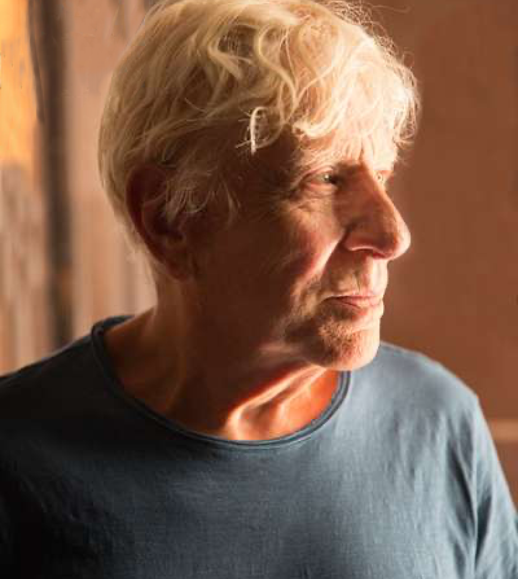
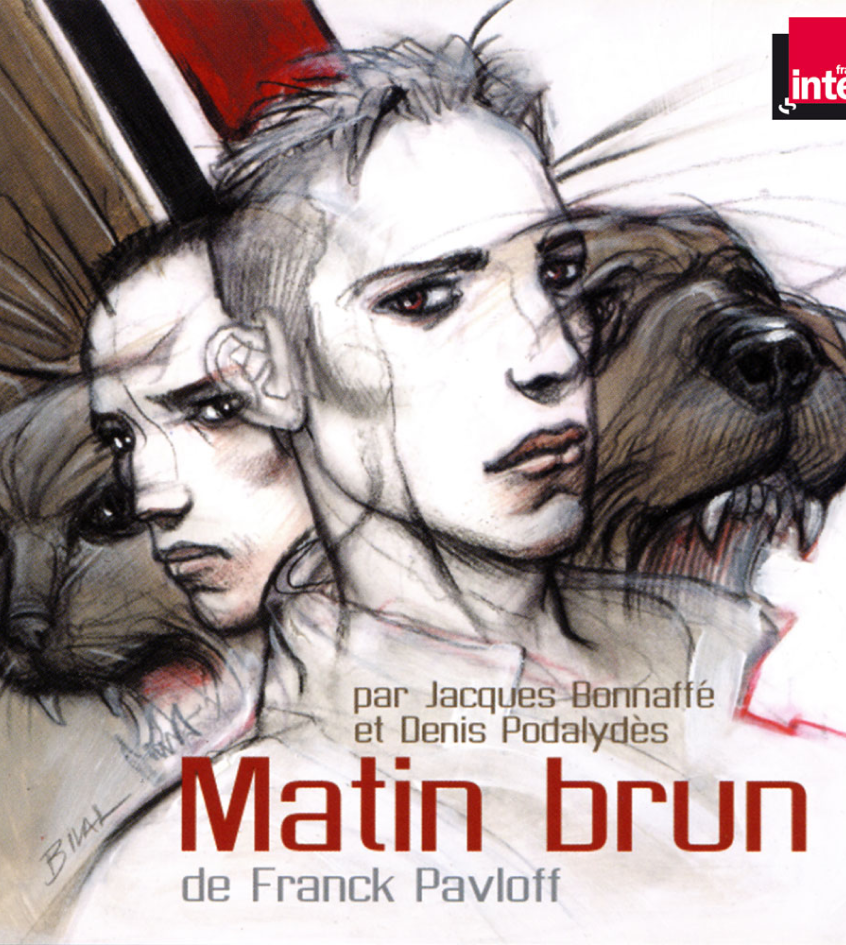

FRANCK PAVLOFF
Franck Pavloff est un romancier et poète français. Spécialiste de la psychologie et du droit des enfants, Franck Pavloff a travaillé de nombreuses années en Afrique et en Asie en tant que chargé de mission auprès du ministère de la Coopération, avant de travailler pour le tribunal de grande instance de Grenoble.
MATIN BRUN
Le pays de Charlie et son ami fait face à la montée d’un nouveau régime politique : l’Etat brun. Celui-ci interdit la possession d’animaux d’un autre pelage que le brun. Bien que peinés, Charlie et son ami se plient à la règle : ils se séparent de leurs animaux pour en prendre des bruns. Mais le régime ne compte pas s’arrêter là.
